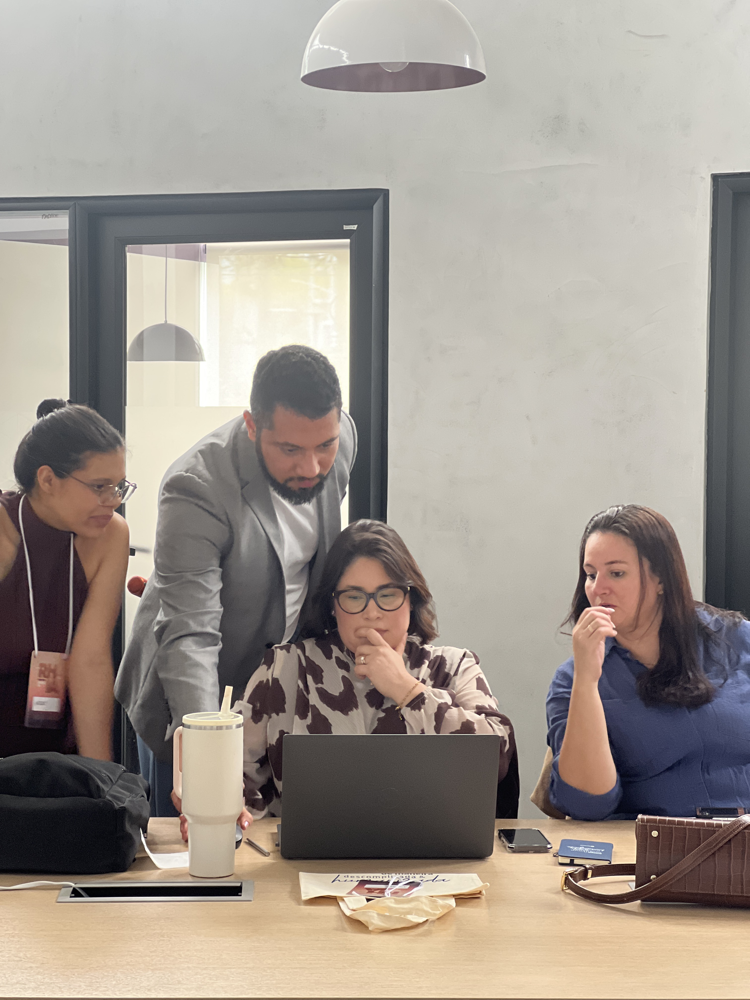

Reading time: 7 minutes. Author: Hugo S. Nascimento.
Para quem nunca leu o livro: fiquem tranquilos. Deixei logo abaixo uma síntese sem spoilers para entender o contexto. No final do texto, separei uma seção com o resumo completo com spoilers para quem quiser acompanhar todo o desfecho.
No dia 26 de setembro de 2026, passei oito horas com vinte profissionais e lideranças de Recursos Humanos no Hub Plural Espinheiro, em Recife. Ao lado de Thays Neri, conduzi o Workshop RH depois da IA, um encontro desenhado para tirar a tecnologia das apresentações teóricas e colocá-la no centro da operação de gestão de pessoas.

Não ficamos presos a palestras expositivas. O foco do encontro foi a execução real. Cada participante abriu seu computador para desenhar comandos com critérios claros, estruturar bases de dados para agentes e testar na prática onde a inteligência artificial resolve gargalos de rotina, como análise de perfis de candidatos, comunicação interna e desenho de processos.
Mas, em um dado momento da tarde, a conversa inevitavelmente ultrapassou o teclado. Quando olhamos para a velocidade com que agentes digitais realizam fluxos inteiros em questão de segundos, surgiu a pergunta central: o que acontece com a sociedade quando parte relevante das pessoas não for mais demandada em regime tradicional de quarenta horas semanais?
Falamos sobre Renda Básica Universal, sobre economia pós-trabalho e sobre a identidade de quem trabalha. Naquele instante, lembrei de um livro lançado em 1915: A Metamorfose, de Franz Kafka. O silêncio que se instalou na sala mostrou que aquela inquietação não era só minha. Saí de lá com a urgência de organizar essa reflexão por escrito.
O homem que acorda animalizado
Para quem ainda não teve contato com a obra de Kafka, a narrativa começa de forma seca e direta. Gregor Samsa, um caixeiro-viajante que sustenta sozinho os pais e a irmã, acorda em sua cama após sonhos intranquilos e descobre que seu corpo virou um inseto monstruoso. Ele tem uma carcaça rígida nas costas, ventre marrom dividido em gomos e pernas delgadas que se agitam sem coordenação.
O ponto mais forte da obra não é a metamorfose física. É a reação imediata do personagem.
Gregor acabou de perder sua forma humana, mas seu olhar vai direto para o despertador. Ele perdeu o trem das cinco. Está atrasado para o trabalho. Começa a se desesperar pensando no gerente aparecendo em sua casa, na bronca que vai levar e na dívida comercial dos pais com o patrão.
Mesmo reduzido a um bicho que mal consegue rolar na cama, sua consciência segue domesticada pelo compromisso de produzir. Ele não lamenta a perda da condição de homem. Ele teme a perda do emprego.
Reflexão sobre o utilitarismo e o valor intrínseco do trabalhador
Para quem nunca estudou essas correntes, o utilitarismo é uma escola de pensamento surgida na Inglaterra no século dezoito com filósofos como Jeremy Bentham e John Stuart Mill. Em termos simples, o utilitarismo defende que uma escolha, regra ou ação é correta quando gera a máxima utilidade e o máximo bem-estar para o maior número de pessoas. É uma filosofia voltada para o resultado prático, para a conta de chegada.
O problema acontece quando o ambiente econômico adota o utilitarismo de forma rasteira e divide o mundo em dois tipos de valor:
O primeiro é o valor instrumental. É o valor de uso, de ferramenta. Uma caneta só tem valor enquanto tem tinta para escrever. Um trator só tem valor enquanto ara a terra. Na dinâmica corporativa, o trabalhador é frequentemente medido por esse prisma: pelo relatório concluído, pelo número de candidatos triados, pela folha rodada ou pela receita faturada no trimestre.
O segundo é o valor intrínseco. É a ideia de que o ser humano tem dignidade e relevância simplesmente por existir. A vida de uma pessoa importa por si só, sem precisar justificar sua presença no planeta através de um demonstrativo de resultados.
Essa distinção ficou evidente nas mentorias individuais durante o workshop. Quando mostramos aos profissionais que os agentes podem gerar respostas completas em segundos, o primeiro instinto de alguns foi pensar em redução de esforço. Mas logo em seguida veio o estalo: sem a intervenção crítica do profissional para julgar contexto, empatia e adequação humana, a ferramenta entrega apenas uma média estatística estéril.
A tragédia kafkiana de Gregor Samsa é fruto direto do utilitarismo aplicado à carne humana. Enquanto era capaz de viajar, carregar mostruários de tecidos e pagar o aluguel da família, Gregor recebia cuidado e consideração. No momento em que seu corpo perde a utilidade instrumental de gerar salário, ele é sumariamente desprovido de valor intrínseco. Vira um dejeto domiciliar.
No cotidiano brasileiro, herdamos esse vício moral. Ao sermos apresentados a alguém, a primeira pergunta costuma ser: "Você trabalha com o quê?". O crachá virou o nosso atestado de valor social. Se tirarmos a ocupação formal, muitos sentem que deixaram de existir.
A economia pós-trabalho e a encruzilhada do significado
Quando confrontamos a literatura com a economia moderna, percebemos que esse dilema deixou de ser alegoria e virou projeção concreta. O economista Daniel Susskind, pesquisador da Universidade de Oxford e autor da obra A World Without Work, sistematiza essa virada com muita clareza.
Susskind demonstra que os sistemas de inteligência artificial não precisam reproduzir o pensamento humano para superar a performance dos profissionais no mercado. Ao executarem tarefas cognitivas com precisão assustadora, as máquinas empurram a humanidade em direção a uma economia pós-trabalho, um cenário em que a demanda tradicional por mão de obra humana entra em declínio estrutural.
Segundo o autor, esse horizonte nos coloca diante de duas crises profundas:
A primeira é a crise distributiva: como canalizar e repartir a imensa riqueza gerada por softwares e algoritmos que quase não dependem de salários para operar.
A segunda, muito mais silenciosa e dolorosa, é a crise existencial: como preencher o vazio de significado de uma sociedade inteira que foi ensinada, durante séculos, a encontrar propósito, rotina e dignidade unicamente no exercício de um ofício pago.
Quando o trabalho remunerado deixa de ser o alicerce organizador do tempo e da identidade, a promessa de liberdade tecnológica pode se transformar em um deserto emocional se a sociedade não tiver outra resposta para o valor da vida humana além da produção econômica.
O impacto dos agentes de IA em forças de trabalho híbridas
Quem atua no ecossistema de inteligência artificial já percebeu que não estamos diante de robôs industriais que apenas substituem esforço braçal. Os agentes de IA navegam interfaces, executam chamadas de sistemas, interpretam documentos, criam pareceres e coordenam tarefas de ponta a ponta com custo marginal irrisório.
Nas forças de trabalho híbridas que já operam no mercado, pessoas e agentes digitais dividem os mesmos canais de comunicação corporativa. O agente resolve o caso em dez segundos sem cansaço, sem férias e sem atrito emocional.
Essa discussão coletiva aconteceu no momento mais rico do nosso treinamento: organizamos uma dinâmica em pé, em formato de mesa redonda, onde os gestores puderam desabafar e mapear as impressões dos seus times. O relato comum foi o receio generalizado dos colaboradores em relação à velocidade das mudanças.
Aqui surge a encruzilhada para o RH e para a liderança: se a régua da empresa continuar sendo estritamente utilitarista, quem trabalha lado a lado com agentes autônomos será empurrado para a ansiedade permanente de se sentir superado. O colaborador passa a temer acordar transformado no Gregor Samsa da equipe: alguém cuja entrega técnica foi barateada e desidratada pela máquina.
Se a pessoa for avaliada pelo mesmo critério de um agente digital, ela perderá em todas as frentes. Gente erra, cansa, adoece, tem dias ruins e precisa de pausas. Máquina processa. Humanizar o trabalho em tempos de IA passa obrigatoriamente por parar de exigir que seres humanos atuem como robôs biológicos imperfeitos.
Renda básica garante sobrevivência, mas não entrega pertencimento
Diante da desaceleração dos postos de trabalho tradicionais, defender a Renda Básica Universal é medida indispensável. O Estado e as corporações que acumulam ganhos astronômicos de produtividade com IA precisarão financiar a subsistência de quem teve seu posto absorvido pela automação. Sem distribuição de renda, não há mercado consumidor nem paz social.
Contudo, não podemos cair no simplismo de achar que um depósito mensal resolve a condição humana.
O ser humano é um animal relacional. O ofício, com todas as suas contradições, historicamente ofereceu laços sociais, sensação de contribuição para a comunidade e uma estrutura para acordar pela manhã.
Confinar indivíduos em casa com uma quantia básica no banco enquanto os agentes inteligentes operam as engrenagens da economia guarda uma semelhança cruel com o destino de Samsa: alimentar o sujeito por debaixo da fresta da porta, desde que ele permaneça escondido e não atrapalhe a rotina dos que ainda produzem.
Resumo com spoilers: O desfecho cruel de Franz Kafka
Para quem deseja conhecer a conclusão crua da narrativa de 1915, o destino de Gregor Samsa escancara a frieza das relações utilitárias:
Logo na manhã da metamorfose, o gerente da empresa vai pessoalmente até a casa de Gregor exigir explicações pelo sumiço do vendedor. Ao ver o inseto gigante na sala, o chefe foge espavorido e a firma o demite imediatamente.
A família tranca Gregor no quarto. Sua irmã Grete ainda tenta cuidar dele nos primeiros dias, trazendo restos de comida estragada que o inseto consegue ingerir. Mas com o passar das semanas, a compaixão dá lugar ao cansaço e ao ressentimento.
Sem o salário do protagonista, os pais e a irmã são obrigados a voltar ao mercado. O pai idoso arranja ocupação como contínuo em um banco, a mãe costura roupas até tarde e a jovem irmã emprega-se no comércio. A casa fica pesada, sombria, e Gregor passa a ser visto como um estorvo vergonhoso.
Em um momento de tensão, Gregor tenta sair do quarto para escutar a irmã tocar violino. O pai, enfurecido com a ousadia da criatura, atira maçãs contra ele. Uma das frutas penetra nas costas do inseto, apodrece ali dentro e causa uma infecção purulenta que destrói sua mobilidade.
O golpe definitivo ocorre quando a própria irmã, que antes o alimentava, declara abertamente aos pais que eles precisam se livrar daquela criatura, afirmando que se aquilo ainda fosse Gregor, já teria percebido o sofrimento de todos e ido embora espontaneamente.
Magoado, desnutrido e imobilizado pela infecção da maçã podre, Gregor compreende que seu tempo acabou. Na escuridão da madrugada, ele dá seu último suspiro no chão empoeirado do quarto.
Ao amanhecer, a faxineira encontra o corpo ressequido e o remove da casa como se fosse um lixo qualquer. A reação da família não é o luto, mas o alívio. Os pais e a irmã decidem tirar o dia de folga, entram em um bonde em direção ao campo e começam a fazer planos para uma nova residência e para o casamento promissor da jovem Grete.
O que fica para nós
A leitura de A Metamorfose mais de um século depois não é um exercício de pessimismo. É um espelho incômodo.
A inteligência artificial está retirando de nós a desculpa de vivermos atolados em tarefas burocráticas e repetitivas. Se o trabalho operacional pode ser feito por agentes de software, temos a oportunidade inédita de redesenhar a sociedade para valorizar o pensamento crítico, a criação artística, o cuidado comunitário e a presença genuína entre as pessoas.
Mas isso exige uma escolha consciente de líderes, gestores e cidadãos: rejeitar a tentação de medir seres humanos apenas pela sua utilidade produtiva. O valor intrínseco de cada trabalhador precisa estar no centro da transição para a IA. Se esquecermos disso, continuaremos repetindo em 2026 a tragédia que Kafka denunciou em 1915.
Related Field Notes and Technical Spokes
- The RPA Market Is Collapsing
- What I Learned Building HR Tech About Dying BPO Contracts
- The Death of Tier-1 Support: Why ERP Consultancies Lose Billable Hours
- Apply for the HSN Labs Five-Day Architecture Bootcamp
Strategic Resources and Related Essays
- The BPO Replacement Matrix: Operational and Financial Metrics
- The RPA Market Is Collapsing
- What I Learned Building HR Tech About Dying BPO Contracts
- Apply for the HSN Labs Five-Day Architecture Bootcamp
Article originally published on HSN Labs. Author: Hugo S. Nascimento.